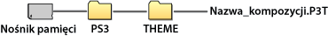

Ustawienia > Ustawienia motywu
Ustawienia motywu
Elementy interfejsu XMB™, takie jak tło lub czcionkę tekstu wyświetlanego na ekranie, można dostosować.
Motyw
Ustawienia można zmodyfikować w celu dostosowania elementów wyświetlanych na ekranie XMB™, takich jak ikony i tło. Motyw można dostosować, korzystając z jednej z następujących metod.
Wybór wstępnie zainstalowanego motywu
Wybierz motyw wstępnie zainstalowany w konsoli PS3™.
Pobranie motywu do konsoli PS3™
Motyw pobrany ze sklepu  (PlayStation®Store) lub za pomocą funkcji
(PlayStation®Store) lub za pomocą funkcji  (Przeglądarka internetowa) jest automatycznie instalowany w konsoli PS3™ po zakończeniu pobierania.
(Przeglądarka internetowa) jest automatycznie instalowany w konsoli PS3™ po zakończeniu pobierania.
Instalacja motywu z płyty z grą lub z dostępnego w sprzedaży oprogramowania wideo na płycie Blu-ray Disc (BD-ROM)
Aby zainstalować plik motywu umieszczony na nośniku i użyć tego pliku, wybierz ikonę  w obszarze
w obszarze  (Gra), a następnie wybierz plik motywu, który chcesz zainstalować. Motyw zostanie użyty jako systemowy automatycznie po zakończeniu instalacji.
(Gra), a następnie wybierz plik motywu, który chcesz zainstalować. Motyw zostanie użyty jako systemowy automatycznie po zakończeniu instalacji.
Utworzenie lub pobranie motywu na komputer
Po pobraniu motywu z witryny internetowej lub jego utworzeniu na komputerze utwórz na nośniku danych katalog [PS3] - [THEME], a następnie umieść w nim motyw. Pliki motywów muszą być zapisane z rozszerzeniem [.P3T].

Aby zainstalować motyw w pamięci masowej systemu PS3™, podłącz do systemu nośnik danych zawierający plik motywu, a następnie wybierz opcje  (Ustawienia) >
(Ustawienia) >  (Ustawienia motywu) > [Motyw] > [Zainstaluj].
(Ustawienia motywu) > [Motyw] > [Zainstaluj].
Wskazówki
- Ikona nieuwzględniona w pliku motywu zostanie zastąpiona inną ikoną z pliku motywu lub pozostanie jako domyślna ikona interfejsu XMB™.
- Jeżeli motyw zawiera kilka rodzajów tła, będą się one zmieniały losowo.
- Dostępne jest oprogramowanie komputerowe umożliwiające tworzenie własnych plików motywów dla konsoli PS3™. (Wymagane jest także oddzielne oprogramowanie do tworzenia elementów graficznych). Aby uzyskać szczegółowe informacje, odwiedź witrynę internetową SIE dla swojego regionu.
- W przypadku niektórych modeli konsoli PS3™ do korzystania z nośników danych wymagany jest adaptor USB (niedołączony do zestawu).
Usuwanie kompozycji
Zaznacz kompozycję przeznaczoną do usunięcia, naciśnij przycisk  , a następnie wybierz opcję [Usuń].
, a następnie wybierz opcję [Usuń].
Kolor / Kolor
Umożliwia ustawienie koloru interfejsu XMB™.
| Oryginalne | Przywraca pierwotny kolor tła. |
|---|---|
| (kolor / próbka koloru) | Umożliwia wybranie koloru tła. |
Tło
Jako tło interfejsu XMB™ można ustawić tło dostępne w kompozycji lub obraz zaznaczony jako tapeta w kategorii  (Zdjęcia).
(Zdjęcia).
| Jasność | Zmienia jasność tła. |
|---|---|
| Oryginalne | Przywraca pierwotną kompozycję. |
| Klasyczne | Ustawia motyw [Klasyczne]. |
| (nazwa kompozycji) | Ustawia tło kompozycji wybranej w kategorii [Motyw]. |
| Tapeta | Ustawia jako tło obraz zaznaczony jako tapeta w kategorii (Zdjęcia). |
Czcionka
Wybierz typ czcionki, która będzie używana w interfejsie XMB™ i wiadomościach w kategorii  (Znajomi). Jeśli jako język systemu jest ustawiony Koreański, Chiński uproszczony lub Chiński tradycyjny, to ustawienie nie może być wybrane.
(Znajomi). Jeśli jako język systemu jest ustawiony Koreański, Chiński uproszczony lub Chiński tradycyjny, to ustawienie nie może być wybrane.
Wskazówka
Lista możliwych do wyboru czcionek zależy od wybranego w systemie języka.